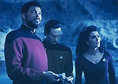
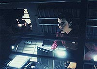
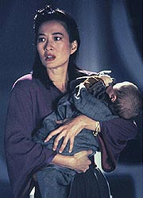
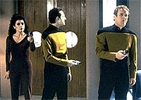
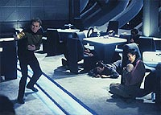

|
MANCHETE
DO EPISDIO
Nova
Gerao acrescenta mais um
episdio sobre possesso ao franchise
Episdio
anterior | Prximo
episdio
Sinopse:
Data Estelar: 45571.2.
Um sinal subespacial de socorro que parece estar sendo emitido por
uma nave da Frota Estelar leva a Enterprise a uma lua aparentemente
desabitada, orbitando Mab-Bu VI. A ltima presena registrada da
Frota na rea foi da USS Essex, desaparecida no local h dois sculos.
Embora as chances de que a tripulao perdida ainda estivesse viva
sejam mnimas, Troi sente que h vida na luda.
 Uma
tempestade magntica impede o teletransporte para a superfcie, de
modo que Riker, Troi e Data tentam pousar na lua com uma nave
auxiliar. A nave acaba no suportando a tempestade e se choca
contra a superfcie. Riker quebra o brao e as comunicaes com
a Enterprise so perdidas. Troi continua sentindo formas de vida, e
agora ela descreve como algo poderoso, se aproximando junto de uma
nuvem da tempestade. Enquanto isso, na Enterprise, O'Brien voluntrio
para arriscar sua vida e se transportar para a superfcie, a fim de
resgatar os outros. Enquanto ele tenta montar o equipamento que
permitir ao grupo avanado deixar a lua, a nuvem envolve os
tripulantes e estranhos glbulos de energia invadem os corpos de
todos, exceto Riker.
A tentativa acaba tendo sucesso, e o grupo avanado retorna
Enterprise. De volta a bordo, Data, Troi e O'Brien insistem que a
Enterprise conduza uma busca sistemtica na regio polar da lua
--uma idia que Riker, Picard e o resto da tripulao consideram
absurda. Quando Riker questiona os motivos do trio, eles se rebelam
violentamente.
 O
grupo faz refns no bar panormico (Ten-Forward), o que obriga
Picard a dar ateno s suas exigncias --ou seja, enviar a
Enterprise para o plo lunar. Enquanto isso, a dra. Crusher
especula que Riker no tenha sido afetado como os outros trs em
razo de sua leso no brao, que teria repelido a fora que est
dominando O'Brien, Troi e Data. Mais tarde, essas entidades se
revelam quando Troi, a lder do trio amotinado, se identifica como
o capito Bryce Shumar, da nave estelar Essex.
Troi explica que os espritos da tripulao da Essex foram
aprisionados nas correntes magnticas que envolvem a lua quando a
nave desapareceu, dois sculos atrs. Ao transportar com segurana
seus restos mortais de volta Terra, Picard os libertaria de seu
aprisionamento espiritual.
O comportamento violento dos trs, entretanto, faz com que Picard
desconfie das verdadeiras intenes do grupo. Ao mesmo tempo, a
dra. Crusher especula que, ao induzir uma grande quantidade de dor
aos corpos dos trs, seria possvel obter o mesmo efeito que
impediu que Riker fosse tomado. Geordi e a alferes Ro comeam a
trabalhar, desenvolvendo um meio de dar um choque nos trs, mas,
quando a tentativa realizada, Data acaba escapando. O andride
ento ameaa matar todos na sala, e Picar concorda em ajud-los
incondicionalmente.
Conforme eles se aproximam do plo lunar, Riker lembra o trio de
que os mesmos problemas que os impediram de se transportar para a
superfcie antes iriam continuar. O'Brien diz que pode sobrepujar
as dificuldades, e os trs partem para a rea de carga 4, com trs
refns, incluindo Picard.
 Ao
chegar na rea de carga, Troi revela que seu povo na verdade um
grupo de condenados, e a lua uma colnia penal, de onde ela
pretende escapar usando os corpos de tripulantes da Enterprise.
Picard revela que ir abrir a comporta da rea de carga e matar a
todos na sala, incluindo a si mesmo, antes de arriscar a vida do
resto de sua tripulao. Se qualquer outra escolha, os espritos
deixam a Enterprise e retornam lua, e Troi, Data e O'Brien
retornam ao normal.
Comentrios:
"Power
Play" mais um episdio que lida com aspectos quase
espirituais em Jornada nas Estrelas. Por mais que se d ao
franchise um aspecto cientfico sua abordagem das histrias,
fica muito claro que a posio dos que escrevem os episdios
sempre foi a de reforar a idia de que exista uma alma, ou esprito,
para cada ser vivo auto-consciente.
A consequncia prtica de ter isso como uma das premissas do
universo da srie a produo de histrias que lidam com
possesso de corpos. O exemplo mais bvio disso na Srie Clssica
o episdio "The Lights of Zetar" --longe de ser
uma obra-prima. "Power Play" tambm no est
muito distante de ser um remake daquele episdio.
A diferena bsica, que joga em favor do episdio da Nova Gerao,
que no conhecemos a natureza da possesso. Seriam de fato os
espritos dos tripulantes da Essex, aps 200 anos de insanidade
induzida pela ausncia de corpos fsicos? Ou criaturas aliengenas
de outra natureza, se apropriando das identidades dos humanos mortos
h dois sculos?
O desenrolar dessa premissa conduzido com razovel dose de tenso,
emoo e suspense, de modo a torn-lo melhor que seu equivalente
temtico clssico.
 Mais
uma vez os roteiristas recaem sobre um erro recorrente durante as ltimas
temporadas da Nova Gerao: eles tratam Data como um
equivalente humano. Se os espritos so expulsos do corpo por uma
substncia qumica produzida quando h dor, no parece haver
qualquer equivalncia entre o mecanismo que poderia tirar o esprito
de dentro de Data e o dos tripulantes humanos (o andride no pode
sentir dor, nem tem bioqumica similar humana). Usa-se uma
desculpa muito esfarrapada para incluir Data no mesmo saco dos
outros.
Felizmente, esse remendo na histria no crucial para seu
desenvolvimento, uma vez que Data acaba escapando da rajada que iria
inflingir dor aos tripulantes afetados. Mesmo assim, essa
antropomorfizao excessiva do andride acaba por tirar a
caracterstica mais interessante dele --justamente a sua no-humanidade,
do ponto de vista biolgico. Um ponto a menos para a caracterizao
do personagem.
Um contraponto interessante para a falta de desenvolvimento dos
personagens o estabelecimento de interessantes tens de
continuidade dentro da cronologia de Jornada nas Estrelas.
Fala-se aqui da nave USS Essex, da classe Daedalus, que operou em
nome da Frota Estelar e da Federao 172 anos antes do episdio,
ou seja, na segunda metade do sculo 22.
 Existem
dados interessantes sobre a Daedalus (inclusive de seu design,
predecessor s naves da classe Constitution, como a Enterprise NCC-1701),
mas eles so em geral no-cannicos (nunca apareceram em nenhum
episdio). O mximo que se pode dizer em favor da classe Daedalus
que Benjamin Sisko tinha um modelo em seu escritrio do que se
diz ser uma nave dessa classe. O modelo na verdade foi criado para
incluso no livro "Star Trek Chronology", de Michael
Okuda e Denise Okuda.
Do ponto de vista tcnico, o episdio no oferece nem destaques
grandiosos, nem muitos deslizes. Tirando a sequncia que mostra a
nave auxiliar na turbulncia (que est longe de ser convincente),
o episdio bem realizado como de costume.
Citaes:
Data (possudo) -
"You, Klingon, attack me. ...Or are you afraid?"
("Voc, Klingon, me ataque. ...Ou est com medo?")
Worf - "I have no fear of death."
("Eu no tenho medo da morte.")
Data (possudo) - "And I have no fear of killing you."
("E eu no tenho medo de matar voc.")
Trivia:
 Durantes as filmagens Brent Spiner perdeu suas lentes de contato que
transformavam seus olhos nos olhos de Data, e Marina Sirtis ficou to
suja de areia que teve que abandonar a filmagem, tomar um banho ao
meio-dia, se vestir e se maquiar como Troi novamente, e voltar ao
trabalho.
Durantes as filmagens Brent Spiner perdeu suas lentes de contato que
transformavam seus olhos nos olhos de Data, e Marina Sirtis ficou to
suja de areia que teve que abandonar a filmagem, tomar um banho ao
meio-dia, se vestir e se maquiar como Troi novamente, e voltar ao
trabalho.
Aps
esse episdio s veremos Ro Laren em "Cause
and Effect", daqui a trs semanas.
Colm Meaney volta como O'Brien. O personagem no aparecia desde o
episdio "The Game".
Miles O'Brien voltar agora apenas em "Realm
of Fear", episdio da prxima temporada.
Ficha
tcnica:
Histria de Paul Ruben e Maurice
Hurley
Roteiro de Rene Balcer e Herbert J. Wright & Brannon
Braga
Direo de David Livingston
Exibido em 24/02/1992
Produo: 115
Elenco:
Patrick Stewart como
Jean-Luc Picard
Jonathan Frakes como William Thomas Riker
Brent Spiner como Data
LeVar Burton como Geordi La Forge
Michael Dorn como Worf
Gates McFadden como Beverly Crusher
Marina Sirtis como Deanna Troi
Elenco convidado:
Rosalind Chao como
Keiko O'Brien
Colm Meaney como Miles Edward O'Brien
Michelle Forbes como alferes Ro Laren
Ryan Reid como tcnico do teletransporte
Majel Barrett-Roddenberry como a voz do computador
Episdio
anterior | Prximo
episdio
|